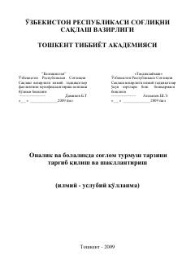

OVOnalik va bolalik davrida sog'lom turmush tarzini shakllantirish bo'yicha ilmiy-uslubiy qo'llanma.
Mazkur илмий-услубий қўлланма onalik va bolalikda sog'lom turmush tarzini targ'ib qilish hamda shakllantirish masalalariga bag'ishlangan. Unda to'g'ri ovqatlanish, жисмоний фаоллик, кун tartibi, ruhiy osoyishtalik va gigiyena qoidalari batafsil yoritilgan. Qo'llanma tibbiyot xodimlari, talabalar va keng kitobxonlar ommasiga mo'ljallangan.